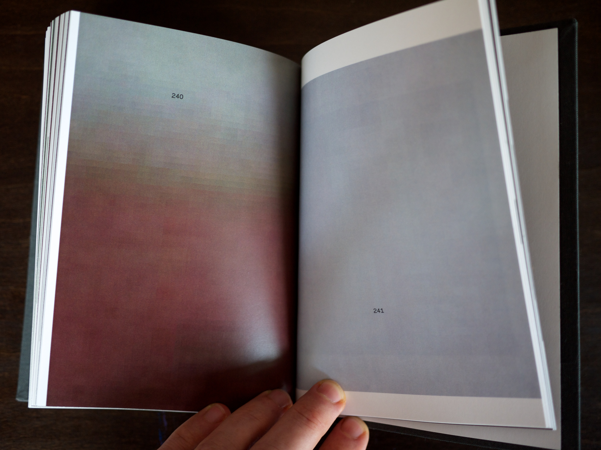
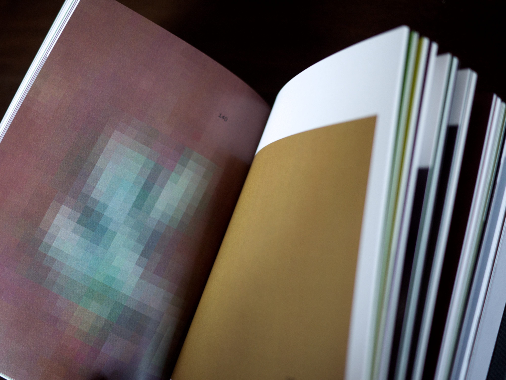
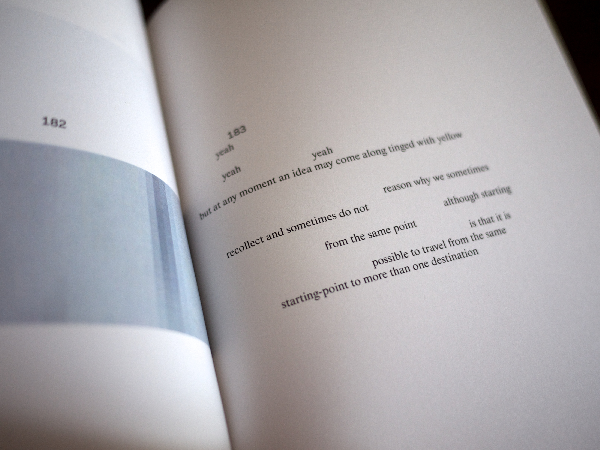
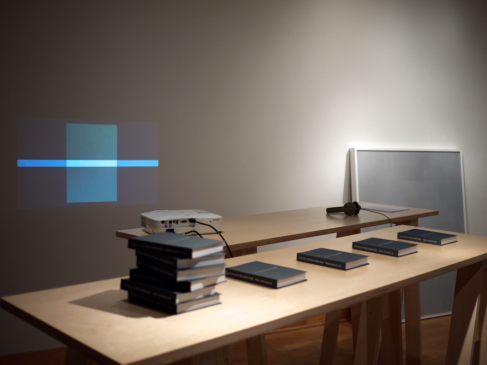
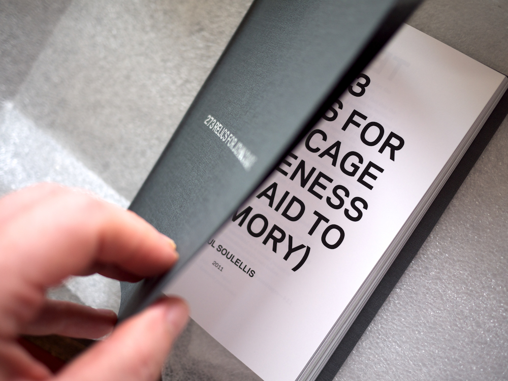
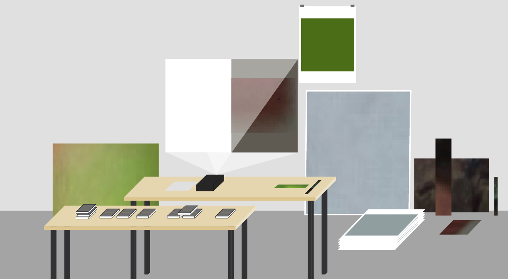

273 Relics for John Cage (A Likeness Is an Aid to Memory) (2011)
In August 2011, I asked Laura Kuhn, director of the John Cage Trust, to select a single item from their archive—something that she knew to be of significant value to John Cage during his lifetime. She chose his mushroom-collecting basket. On August 22, at exactly 10:30 a.m., I took a single 12-megapixel photograph of the basket. That photograph, and the 30-minute recorded conversation with Laura that followed, became the source material for 273 Relics for John Cage (A Likeness Is an Aid to Memory). Cage’s seminal work 4′33″ (1952) provides the core narrative structure.

273 Relics for John Cage is an installation of printed works and video that explores chance, memory and the photographic image. It includes an edition of ten limited-edition books (digital print on paper, 294 pages, silver foil-stamping on linen, 5 in. x 7 in. each), a unique large-format photograph (archival pigment print on rag paper, surface-mounted to plexiglas, 43 in. x 51 in.), six limited-edition prints (silkscreen ink on paper, 20 in. x 26 in.) and video.

The book features 273 images, texts and other artifacts assembled and chosen by chance operations, including 160 photographs sampled from the single image of John Cage’s mushroom-collecting basket. The volume also includes 52 poems, generated and assembled by chance operations from Aristotle’s “On Memory and Recollection’ (350 B.C), John Cage’s “Lecture on Nothing” (1961), M.E. Hard’s “The Mushroom, Edible and Otherwise” (1908), and fragments of conversation recorded at the John Cage Trust on August 22, 2011.

Conceived for the 2012 John Cage centennial celebration, 273 Relics for John Cage was installed at “Revisiting Black Mountain College 3: John Cage’s Circle of Influence,” a conference and exhibition co-sponsored by the Black Mountain College Museum and Arts Center, the University of North Carolina at Asheville, and the John Cage Trust, October 7–November 7, 2011, at Highsmith Gallery, Asheville.

Each relic is numbered and refers to a single second of silence in 4′33″. At once a translational work, an experimental portrait, and a performative tribute, 273 Relics for John Cage explores the impossibility of the image—dismantling the photograph to render it irrelevant, as it disappears. The viewer is left with faint traces of source material and the freedom to investigate phantom images, imagined narratives, and other associations.


Download PDF